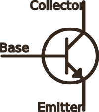

bipolar junction transistor
These components have three pins: base, collector and emitter. A little current flowing between the base and the emitter causes a larger current to flow between the collecter and the emitter. This means they can be used to amplify a signal, or as switches (cutoff and saturation states). These can be combined with resistor to create logic circuits.
Types
Bipolar junction transistors come in two flavours:
NPN transistors

In NPN transistors, the current flows from the base to the emitter.
PNP transistors

In PNP transistors, the current flows from emitter to base.